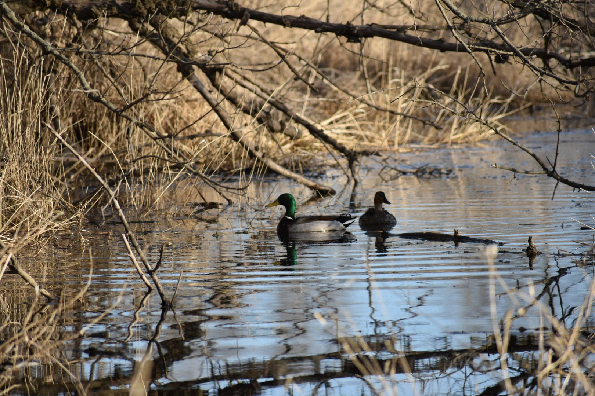
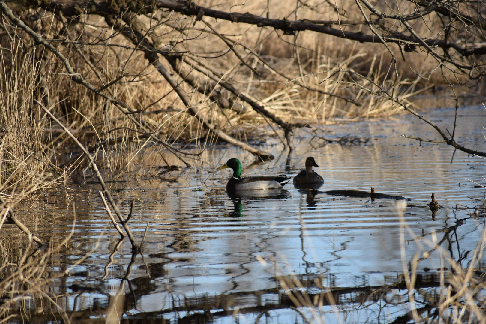

Ecology of Animal-Vehicle Collisions
Animal-vehicle collisions (AVCs) are ubiquitous across the developed world. AVCs cause billions of animal deaths each year and pose substantial safety threats and economic costs to people. Research on AVCs in the DeVault Lab is focused on learning why AVCs occur by investigating what goes wrong from the animal’s perspective when they are struck by vehicles. DeVault Lab members then apply that knowledge to the development of mitigation measures designed to reduce collisions.
Mallard-vehicle collisions: ambient light and flight initiation distance
Between 1988 and 2010, more than 219 people were killed in aircraft crashes caused by collisions with birds. These collisions also result in costly damage to aircraft, totaling nearly $1 billion/year on average. The mallard (Anas platyrhynchos) alone caused at least 1205 recorded bird strikes with commercial U.S. aircraft in the last 30 years and is ranked as the 7th highest-risk bird species at airports across the U.S. To further understand the ecology of these interactions and identify potential mitigation solutions, Shane Guenin is leading a study using simulated and actual vehicle approaches to examine the effects of ambient light, vehicle distance, vehicle speed, and vehicle lighting on duck perception and escape behaviors.
Vehicles and wild pig behavior and conspicuity
Wild pig-vehicle collisions in the United States cause millions of dollars in damages annually, and as wild pig (Sus scrofa) populations continue to grow, the number of collisions and overall monetary impact of wild pigs will likely increase. Many mitigation methods have been tested to reduce wildlife-vehicle collisions; however, these methods have been tested mostly in large mammals other than wild pigs. Carson Pakula is leading a study examining the behavior of wild pigs in response to approaching vehicles at night, including testing the effectiveness of a rear-facing light bar at reducing dangerous wild-pig vehicle interactions, which has been shown to be effective with white-tailed deer (Odocoileus virginianus). Because wildlife-vehicle collisions can also be attributed to a driver's inability to detect an animal on the road at night, Carson is also interested in understanding the distance at which drivers can identify wild pigs on and near the roadway to help inform road management.

 

Avian Ecotoxicology
Ongoing research in our lab uses integrated approaches to examine the interactions between environmental contaminants, such as heavy metals and radioactivity, and birds at the individual, population, and ecosystem scales. Much of the ecotoxicology work we do tends to focus on birds because they are visible, widespread, and reliable indicators of environmental contamination. Outcomes contribute to our understanding of exposure and sensitivity of birds and other wildlife to natural and anthropogenic contaminants with the goal of identifying management and conservation solutions that promote wildlife and human health.
Birds as potential vectors of heavy metals
Constructed wetlands are used to facilitate the sequestration of heavy metals into soil, which can greatly reduce the spread of metal contamination into downstream aquatic environments. The DeVault Lab is currently investigating how potentially toxic metals are transferred from constructed wetlands to terrestrial environments by quantifying heavy metal burdens in tissues of species that utilize constructed wetland habitat. Specifically, we are comparing heavy metal concentrations in avian communities using constructed wetlands to avian communities using wetlands with no history of contamination. With this information, we aim to better understand whether further mitigation efforts are necessary to reduce the spread of heavy metal contamination from constructed wetlands.
Monitoring cadmium in birds for SHEP
Cadmium (Cd) is a heavy metal with natural and anthropogenic sources and no known nutritional value. When exposed, birds may accumulate Cd in their tissues, most commonly through their diet. Low concentrations of Cd can be eliminated from the body, while high concentrations can accumulate in blood and tissue and cause deleterious effects. As part of the Savannah Harbor Expansion Project (SHEP) in Savannah, Georgia, dredge materials are deposited in large dredge material containment areas (DMCAs), which attract diverse bird communities composed of thousands of individuals. Surveys of the harbor's benthic sediment revealed a naturally occuring Cd-laden layer, which when dredged and deposited in DMCAs, could lead to increased exposure of birds to Cd. With agency partners, our lab monitors Cd uptake by birds within the DMCAs using field collections of sentinel bird species and state-of-the-art analytical analysis available at SREL.
Scavenging Ecology
Scavenging is much more than a curiosity of animal behavior; carrion consumption is widespread and common among terrestrial vertebrates and can have substantial impacts on communities and ecosystems. Our work in this area has branched into several lines of inquiry, the most recent of which intersect with our interest in the causes and consequences of AVCs. With our collaborators, we recently investigated the magnitude of animal mortality caused by AVCs, how carcasses produced from automobile strikes influence animal communities through scavenging, and the role vultures play in providing ecosystem services by consuming biomass produced from AVCs.
Much of the scavenging ecology work we do is in collaboration with the Beasley Wildlife Lab.